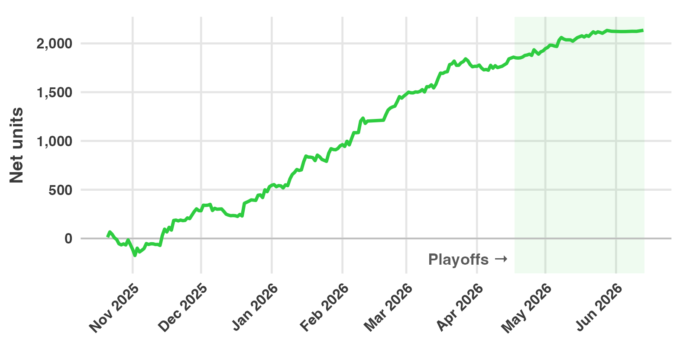

2025-26 NBA Recap: +2,135 Units at 16.3% ROI
Summary
Slam Dunk Bets recommended 16,949 wagers on NBA first-event props during the 2025-26 season, from opening night on October 21, 2025, through the NBA Finals on June 13, 2026. The wagers returned +2,135 net units on 13,059 units staked, a return on investment (ROI) of 16.3%.
This was our best NBA season since we began tracking every wager in a standardized ledger in 2023-24. That season returned +1,692 units (11.8%). The 2024-25 season returned +1,018 units (8.2%).

Results by part of the season
| Wagers | Plays | Wins | Units staked | Net units | ROI | |
|---|---|---|---|---|---|---|
| Regular season | 15,820 | 11,596 | 3,026 | 12,128 | +1,766 | 14.6% |
| Play-in | 71 | 51 | 19 | 48 | +94 | 194.6% |
| Playoffs | 1,058 | 860 | 170 | 882 | +275 | 31.2% |
| Total | 16,949 | 12,507 | 3,215 | 13,059 | +2,135 | 16.3% |
The regular season includes the NBA Cup final on December 16. The play-in result comes from 48 units staked between April 14 and April 17. That is too small a sample to mean much on its own.
19.0% of wagers won. A low win rate is expected for these markets: the median price we bet was +600, which a sportsbook prices as about a 14% chance.
Results by market
| Market | Wagers | Plays | Wins | Units staked | Net units | ROI |
|---|---|---|---|---|---|---|
| First Basket Exact | 1,239 | 927 | 90 | 1,017 | +409 | 40.3% |
| First Basket by Team | 4,670 | 2,870 | 910 | 2,842 | +404 | 14.2% |
| First Basket | 2,697 | 1,841 | 254 | 1,845 | +313 | 17.0% |
| First Assist | 1,020 | 898 | 96 | 1,108 | +305 | 27.5% |
| First Rebound | 615 | 550 | 80 | 548 | +285 | 52.0% |
| First Basket by Team Exact | 1,348 | 1,275 | 168 | 1,311 | +253 | 19.3% |
| First Three | 889 | 659 | 109 | 720 | +146 | 20.2% |
| Win Tipoff | 1,026 | 833 | 550 | 1,000 | +137 | 13.7% |
| First Basket Type | 759 | 538 | 320 | 674 | +38 | 5.6% |
| First Block | 71 | 63 | 6 | 52 | +34 | 65.8% |
| First Two | 2 | 2 | 2 | 3 | +16 | 475.0% |
| First Team Exact | 724 | 588 | 179 | 461 | +4 | 0.8% |
| First Team | 643 | 490 | 293 | 520 | +1 | 0.3% |
| First Steal | 2 | 2 | 0 | 2 | -2 | -100.0% |
| First Three by Team | 1,244 | 971 | 158 | 956 | -209 | -21.8% |
Thirteen of the fifteen markets were profitable. The four markets with the most units staked each returned between 14% and 28%.
One market lost a meaningful amount. First Three by Team lost 209 units on 956 staked (-21.8%). The two team-to-score-first markets, First Team and First Team Exact, finished close to even. First Block, First Two and First Steal had fewer than 100 wagers each, so their ROI figures are not reliable.
What the markets mean:
- First Basket: the player who scores the game’s first points. Some books count only field goals.
- First Basket Exact: the first scorer and how they score, for example a three-pointer.
- First Basket by Team: the first player on a given team to score. By Team Exact adds how they score.
- First Basket Type: how the game’s first points are scored, regardless of player.
- First Three and First Three by Team: the first player to make a three-pointer, in the game or for a team.
- First Team: the team that scores first. First Team Exact adds how they score.
- Win Tipoff: the player who wins the opening jump ball.
- First Assist, First Rebound, First Block, First Steal: the first player credited with each.
Results by month
| Month | Units staked | Net units | ROI |
|---|---|---|---|
| October 2025 | 964 | -62 | -6.5% |
| November 2025 | 2,495 | +348 | 13.9% |
| December 2025 | 1,823 | +245 | 13.5% |
| January 2026 | 2,215 | +419 | 18.9% |
| February 2026 | 1,754 | +511 | 29.2% |
| March 2026 | 2,139 | +304 | 14.2% |
| April 2026 | 1,147 | +158 | 13.8% |
| May 2026 | 484 | +201 | 41.4% |
| June 2026 | 37 | +10 | 27.5% |
Every month after October was profitable. The season’s largest decline came at the start: the running total fell 242 units, from +67 on October 22 to -175 on November 2. It reached a new high on November 15.
We placed wagers on 212 days. 121 of those days (57.1%) finished positive. The best day was December 20, at +130 units. The worst was December 6, at -63 units.
Players
These totals combine every market for each player.
| Player | Wagers | Wins | Units staked | Net units | ROI |
|---|---|---|---|---|---|
| Neemias Queta | 251 | 66 | 202 | +254 | 125.5% |
| Jamal Shead | 42 | 15 | 43 | +136 | 316.4% |
| Evan Mobley | 49 | 14 | 44 | +116 | 261.5% |
| Donovan Clingan | 187 | 42 | 130 | +114 | 87.8% |
| Cason Wallace | 112 | 31 | 66 | +109 | 164.4% |
The three least profitable players were Dyson Daniels (-61 units on 180 wagers, 11 wins), Dominick Barlow (-58 units on 125 wagers, 3 wins), and Mike Conley (-56 units on 74 wagers, no wins). In total we placed wagers on 475 players.
Three of the five most profitable players were frontcourt players: Queta, Mobley and Clingan. The input our first-scorer models rely on most is a player’s expected early role in that night’s starting lineup. We describe the models in Part 3 of our first-basket series.
Largest wins
| Date | Game | Market | Selection | Price | Units staked | Net units |
|---|---|---|---|---|---|---|
| Oct 22, 2025 | PHI @ BOS | First Basket | Neemias Queta | +2500 | 2.6 | +65.2 |
| Jan 16, 2026 | LAC @ TOR | First Basket Exact | Jamal Shead, three-pointer | +6400 | 0.8 | +50.3 |
| Feb 10, 2026 | SAS @ LAL | First Basket Exact | Julian Champagnie, three-pointer | +4500 | 1.1 | +48.7 |
| Mar 20, 2026 | BOS @ MEM | First Assist | Taylor Hendricks | +3500 | 1.4 | +48.2 |
| Nov 19, 2025 | NYK @ DAL | First Basket Exact | Landry Shamet, two-pointer | +5500 | 0.9 | +47.6 |
The ten largest wins together returned +474 units, 22% of the season’s net. Without them, the season would still have returned about +1,660 units. The largest loss on any single play was 5.6 units.
How accurate were the projections?
For each of the 12,507 plays, we compared our projected probability with the sportsbook’s price at the time of the first alert.
| Expected wins | |
|---|---|
| Our projections | 2,594 |
| Sportsbook prices | 2,240 |
| Actual wins | 2,369 |
The plays won 129 more times than the sportsbook prices implied. That gap is the edge the profit comes from. Our projections were too high by 225 wins.
Some of that overestimate is expected. We only bet when our number is higher than the book’s, so we mostly act on the cases where our projection is highest. Some of those projections are too high by chance, and that pushes the total up.
How we counted
- Wagers and plays. A play is one recommendation: a player or team, in one market, in one game. When a price improves after the first alert, we recommend adding to the play, and each addition is logged as a separate wager. The same play at a different sportsbook is also a separate wager.
- Units. Wager sizes are standardized so that the average recommended wager is about one unit. Net units are winnings minus losses. ROI is net units divided by units staked.
- Completeness. The figures include every wager we alerted during the season, at the price that was posted when we alerted it. No wagers were removed. The season had no voided wagers.
- Sportsbooks. DraftKings accounted for 48% of units staked, at a 17.2% ROI. FanDuel accounted for 19%, at 19.7%. The rest was spread across BetRivers, Hard Rock, Bet365, BetMGM, Fanatics, Caesars, theScore and ESPN.
These are tracked results, not a guarantee. Your results depend on which sportsbooks you can use, how quickly you place a wager after an alert, and any betting limits on your account. Past results do not predict future results.
The live record for every market is in the Slam Dunk Dashboard. Results for every season are in the FAQ, and the 2026 WNBA recap covers our basketball results from this summer. To get the alerts as they post, subscribe.